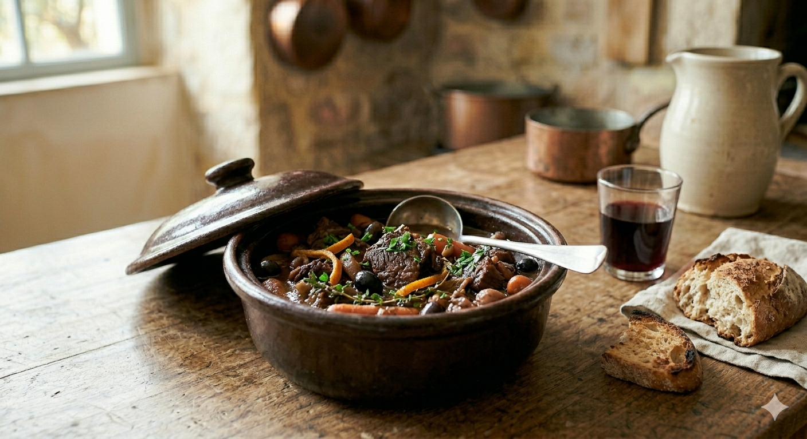

La daube est le pilier de notre cuisine méridionale. Entre le parfum des écorces d'orange et la tendreté de la viande longuement mijotée, c'est tout le soleil de la Provence qui s'invite à table.

Si la tradition populaire utilise souvent le paleron, la macreuse ou le gîte, je privilégie personnellement la joue de bœuf. C’est un morceau plus noble pour ce plat car sa texture naturellement gélatineuse offre un fondant incomparable. Mon autre secret réside dans les écorces d'orange : je les fais sécher moi-même avec soin, ce qui permet de les garder très longtemps et d'en avoir toujours sous la main. Accompagnée d'un oignon piqué d'un clou de girofle et d'une pointe de tomate pour lier la sauce, cette daube est un véritable trésor.
1. La Marinade : La veille, laissez mariner la viande avec le vin, les carottes, l'oignon piqué et le bouquet garni dans un endroit frais.
2. Le Rissolage : Égouttez la viande. Dans une cocotte en fonte, faites dorer la joue et les lardons à l'huile d'olive. Ajoutez ensuite les légumes de la marinade.
3. La Liaison : Incorporez le concentré de tomate. Laissez-le "pincer" légèrement au fond de la cocotte pendant 2 minutes en remuant bien ; c'est ce qui donnera cette couleur sombre et ce goût riche à la sauce.
4. Le Mijotage : Versez le vin de la marinade et déposez vos écorces d'orange séchées. Couvrez et laissez mijoter à feu très doux pendant 4 heures minimum.
5. Le Final : Ajoutez les olives de Nyons 30 minutes avant de servir. Accompagnez idéalement de macaronis ou d'une bonne purée maison.